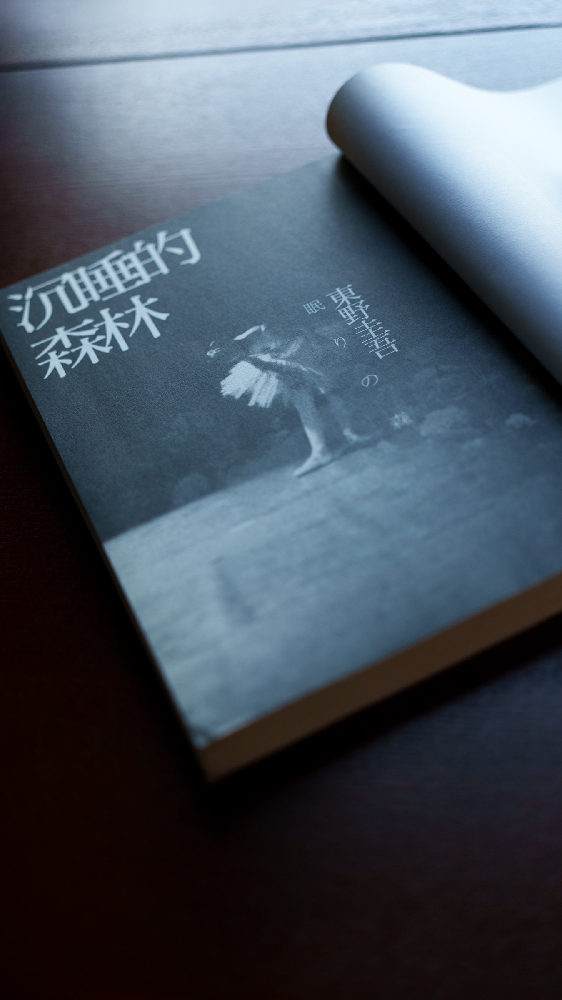
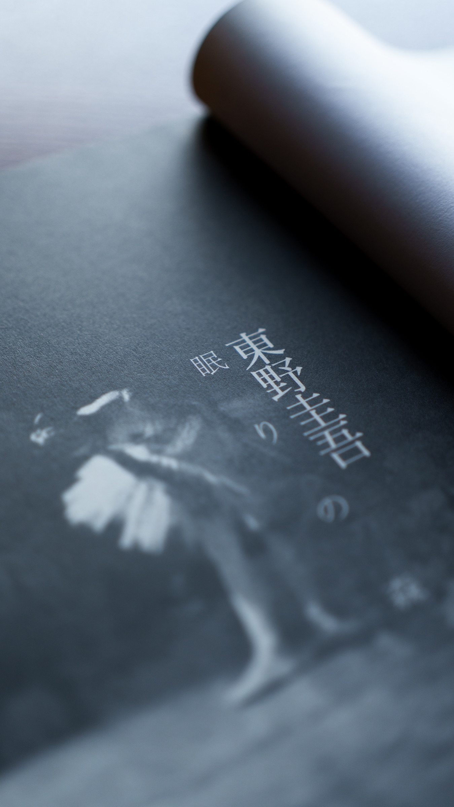

东野圭吾去世，68岁。刚刚看到网上的消息，心里很不好过。
记得买他的第一本书是《恶意》，然后又买了获得直木奖的《嫌疑犯X的献身》。再后来，差不多买了所有能买到的中译本，包括繁体字的台版。书一本一本地增加，最后占去了书架上很长的一排。如今再看，那已经不只是一位作家的作品目录，也像是自己这些年阅读生活留下的一段刻度。

三年前，也是七月末，森村诚一去世。在日本推理小说作家里面，我年轻时看得最多的是森村诚一，后来读得最多的是东野圭吾，现在他们都走了。
这两位作家有一个共同的特点：他们都没有把推理小说仅仅写成智力游戏，也没有沿着所谓「本格派」的路子一直走下去。
森村诚一经历过日本战败后的历史巨变，他的经历使他写出了《人性的证明》那样反思历史、直面社会的作品，后来又以《恶魔的饱食》揭露侵华日军731部队的罪行。他的推理小说背后，始终站着一个真实而沉重的时代。
东野圭吾面对的，是另一个日本。他从经济高速增长的尾声走来，经历泡沫经济的膨胀、破裂，以及此后漫长的低迷。他做过工程师，熟悉技术世界严密的因果关系；成为作家以后，这种理性成了他设计谜局的骨架。但他并没有停留在诡计上，而是把目光伸向家庭、学校、公司、医院、社区，写不同阶层的冷暖，写普通人在亲情、爱情、欲望、羞耻和绝境中的选择。
《恶意》给我的震动，正在这里。案件看似已经解决，真正需要追问的却不是「谁杀了人」，甚至也不只是「怎样杀人」，而是一个人为什么会怀着如此深的恶意，为什么在夺走另一个人的生命以后，还要继续毁掉他的名誉。东野圭吾把推理从寻找凶手推进到辨认人心：供词可以伪造，记忆可以改写，一个讲得通的故事也可能是另一重骗局。作为我读到的第一部东野圭吾作品，《恶意》几乎一开始就告诉了我，他真正感兴趣的谜，并不只在密室和不在场证明之中。
《嫌疑犯X的献身》则把他理工科出身的冷静发挥到了极致。数学家与物理学家的交锋，像一道被反复验算的证明题；可到了最后，击中读者的并不是解题成功的快感，而是那套完美逻辑下面，一个人孤独、卑微而又决绝的感情。理性把故事推到尽头，尽头处却是无法用理性衡量的献身。这种由极冷抵达极热的写法，是东野圭吾最动人的本领之一。

此后读《白夜行》《信》《彷徨之刃》《红手指》《新参者》，会发现他笔下的罪从来不是孤立发生的。家庭的裂缝、贫困与歧视、校园生活、老年困境、司法制度，都可能一点点把人推向无路可走的地方。他并不急于站出来裁判人物，而是把原因一层层揭开，让读者看到罪责不能被取消，痛苦却仍值得被理解。他说过，自己没有权利对人性下结论。这句话也许正可以概括他的克制：写黑暗，却不把人简单写成恶人；写温情，也不假装伤害从未发生。
到了《解忧杂货店》，犯罪和侦破已经不再是故事的中心，悬念仍在，却变成了跨越时间的信件怎样把陌生人的命运连在一起。有人因此觉得它不像从前的东野圭吾，我却觉得那份关心一直都在。只是在早期作品里，它藏在尸体、证词和诡计之后；到这里，它终于走到了明处。那些投进牛奶箱的烦恼，那些并不完美的回答，都在说同一件事：一个普通人对另一个普通人的一点善意，也许真的能够穿过漫长的黑夜。
当然，东野圭吾一生写作极多，不可能每一部作品都达到同样的高度。有些谜面似曾相识，有些人物让位于情节，有些结局也依赖过于精巧的机关。但多年读下来，我越来越觉得，作品数量和畅销纪录并不是他最重要的成就。他真正拓宽的，是推理小说能够抵达的读者和生活：不爱解谜的人可以在其中看见感情，熟悉类型规则的人仍能享受结构与反转，而一个普通读者也会在合上书以后，继续想一想命运、责任，以及人在困境中还能做出怎样的选择。
东野圭吾很少在公众面前谈论自己，更愿意让作品说话。他留下了一百多部作品，书中的加贺恭一郎、汤川学和那些只出现过一次的普通人，还会继续被一代代读者遇见。对于我来说，他也不会只停在今天这条令人难过的消息里。他还在书架上，在多年阅读留下的记忆里，也在那些真相揭开之后、久久不能平静的时刻里。
森村诚一走了，东野圭吾也走了。属于他们的时代终会过去，但他们让我们看见的历史、人心与世事，不会因此消失。
谨以此文，送别东野圭吾。